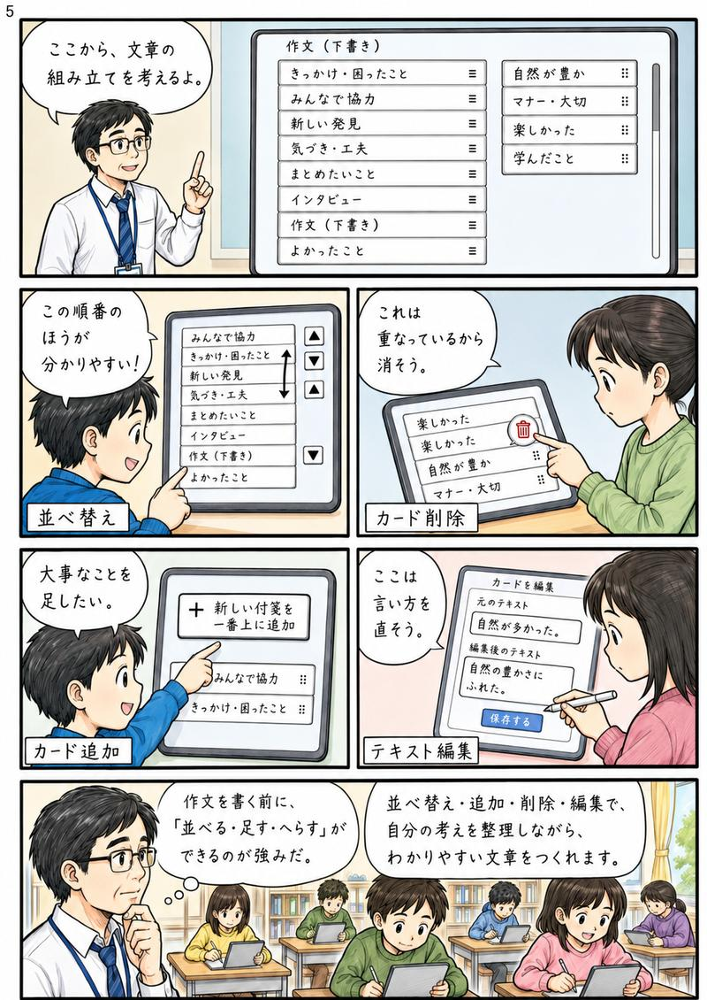
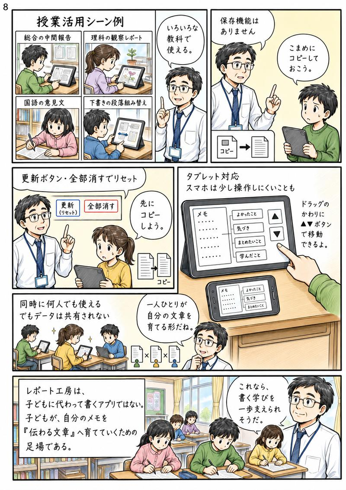

← 教師用マニュアルに戻る
📖 マンガでわかる
レポート工房の使い方
全8ページ ― スクロールまたはページめくりで読めます
📜 スクロールで読む
📖 ページめくりで読む
1
レポート工房とは？ 子どもが作文で詰まる本当の理由
2
アプリの紹介 ― 書く前の思考整理を助けるツール
3
Step 1 ― メモの形式を選んでカードに分ける
4
Step 1（実践） ― メモを貼り付けてカードに変える
5
Step 2 ― カードを並べ替え・追加・削除・編集する

6
Step 2 ― タグで段落を整理する・色分けの意味
7
Step 3・4 ― つなぎ言葉の挿入とまとめてコピー
8
授業活用シーン・注意事項・まとめ

◀ 前へ
1 / 8
次へ ▶